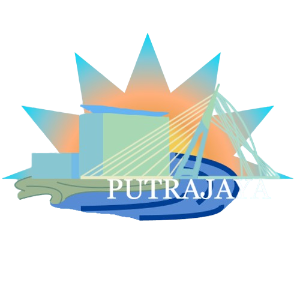

Putrajaya of Roblox Wiki
The city
reference desk.
A practical, community-maintained handbook for citizens, departments, rules, roles, and systems.
Knowledge base

Putrajayaof RobloxPutrajaya of Roblox Wiki
A practical, community-maintained handbook for citizens, departments, rules, roles, and systems.
Knowledge base